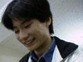

仙台電波高専科学部の部員を紹介。
写真をクリックすれば、大判がでます。
| 4年生 | |
|---|---|
| 猪狩 周二(Syu-ji Igari) | |
| 担当：相撲・ロボコン回路,事務全般・雑用兼任 | |
| 本人より：いつの間にかもう隠居の身？だよね。 | |
| 佐藤 陽一(Youichi Sato) | |
| 担当：相撲・ロボコン機構 | |
| 本人より： | |
| 高橋 俊明(Toshiaki Takahashi) | |
| 担当：ロボコン回路 | |
| 本人より：うにゃ！ | |
| 広橋 毅(Takeshi Hirohashi) | |
| 担当：相撲・ロボコン機構,青葉部屋頭 | |
| 本人より： | |
| 本人のページへ | |
| 3年生 | |
| 會田 裕矢(Yu-ya Aita) | |
| 担当：相撲・ロボコン回路,機械工作,副部長 | |
| 本人より：このページの管理者です。回路屋のハズなんですが、今年のロボコンは工作ばっかりでした・・・。 | |
| 及川 光壱郎(Kouichirou Oikawa) | |
| 担当：川崎機構 | |
| 本人より： | |
| 佐竹 直之(Naoyuki Satake) | |
| 担当：マウスソフトウェア | |
| 本人より： | |
| 本人のページへ | |
| 下田 和哉(Kazuya Shimoda) | |
| 担当：川崎機構 | |
| 本人より： | |
| 菅原 健作(Ken-saku Sugawara) | |
| 担当：川崎？ | |
| 本人より： | |
|  | 鈴木 大悟(Daigo Suzuki) |
| 担当：相撲・ロボコン回路,アセンブラプログラミング,新部長 | |
| 本人より：根性と気合いで根気じゃっ！ | |
| 武田 総一郎(Souichirou Takeda) | |
| 担当：川崎機構 | |
| 本人より： | |
| 武田 光弘(Mitsuhiro Takeda) | |
| 担当：相撲・ロボコン機構,会計長 | |
| 本人より：純機構屋の武田でございます。まっちょなポンプ作ってます。 | |
| 2年生 | |
| 西塔 宏二(Kouji Saitou) | |
| 担当：マウスソフトウェア | |
| 本人より： | |
| 高橋 尚之(Naoyuki Takahashi) | |
| 担当：マウスソフトウェア | |
| 本人より： | |
| 本人のページへ | |
| 田代 拓(Taku Tashiro) | |
| 担当：相撲・ロボコン回路 | |
| 本人より： | |
| 中村 努(Tsutomu Nakamura) | |
| 担当：相撲・ロボコン機構,会計 | |
| 本人より：会計その２の「BOSS」でございます。 | |
| 宮本 祐樹(Yu-ki Miyamoto) | |
| 担当：相撲・ロボコン機構,副部長 | |
| 本人より：メイヤに会うためだけにスウェーデン行きたい！ | |
| 1年生 | |
| 近江 尚(Hisashi Oumi) | |
| 担当： | |
| 本人より：＼＼(^-^)／／ | |
| 小林 誠(Makoto Kobayashi) | |
| 担当： | |
| 本人より：シューティングゲームが好きだ。WINDEPTHが特に好きだ。11/6現在、52位付近(4500人中)にいるはずだ。昔の点数が2、4、6、8、16...と増えるヤツの情報求む。 | |
| 後藤 直也(Naoya Goto) | |
| 担当： | |
| 本人より：PICだよPIC！ | |
| 今 孝公(Takayuki Kon) | |
| 担当： | |
| 本人より：4×4パズル解きます！ | |
| 高橋 裕展(Hironobu Takahashi) | |
| 担当： | |
| 本人より：握り潰してやる！！ | |
| 田村 康洋(Yasuhiro Tamura) | |
| 担当： | |
| 本人より：「オレよりすごいマニアに会いに行く」 | |
| 千葉 東人(Haruto Chiba) | |
| 担当： | |
| 本人より： | |
| 千葉 尚人(Hisato Chiba) | |
| 担当： | |
| 本人より：ドリフトしろ！ドリフト！！ | |
| 奈良岡 豪(Gou Naraoka) | |
| 担当： | |
| 本人より：A:\>DEL *.* | |
| 森村 章一(Syouichi morimura) | |
| 担当： | |
| 本人より：心頭滅却すれば何でもできる。 | |
| 畜生 | |
| まちゃひこ(Matyahiko) | |
| 担当：猫,猪狩'sペット,真部長 | |
| 本人より：「にゃ〜(メシくれぇ〜)」(うそ!?) |
{kind=link}
{kind=link}
{kind=link}
{kind=link}
{kind=link}
{kind=link}
{kind=link}
{kind=link}
{kind=link}
{kind=link}
{kind=link}